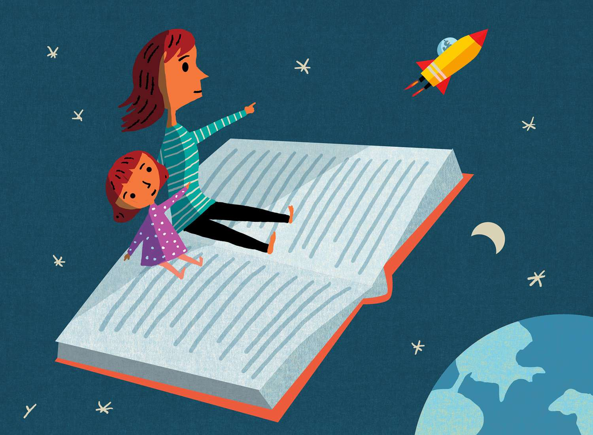
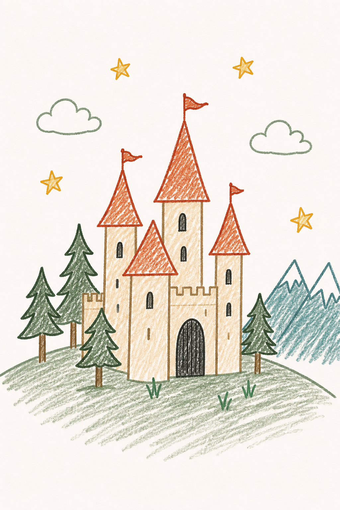
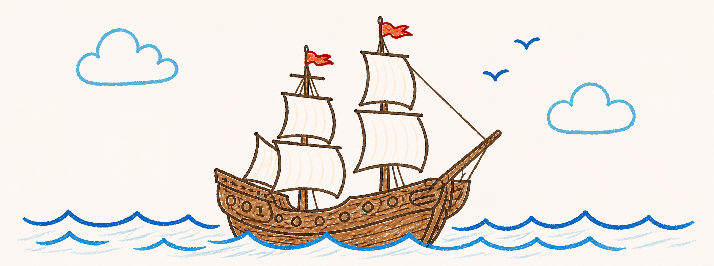
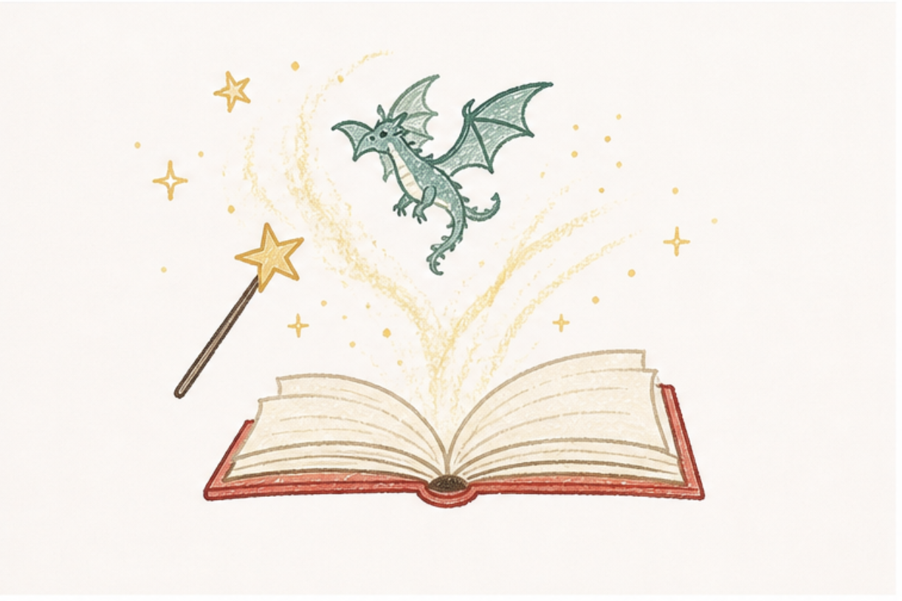
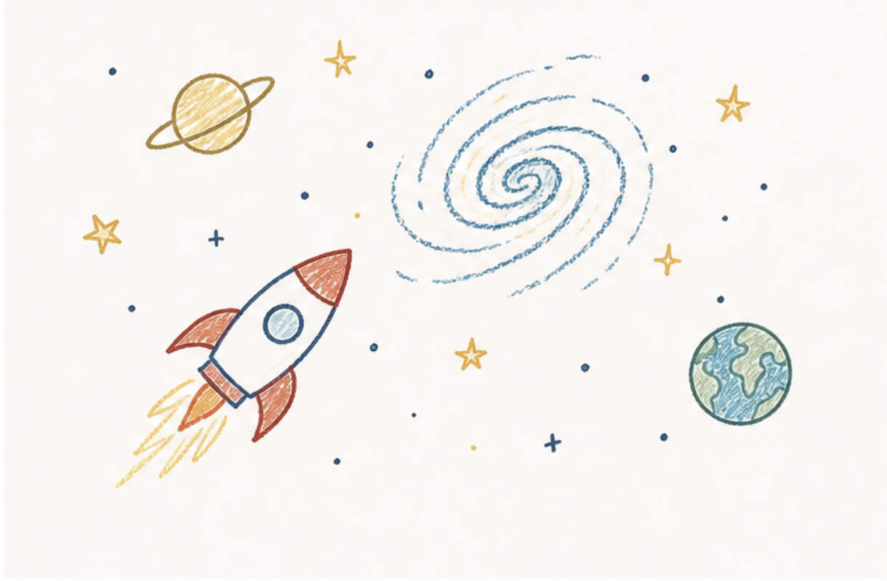

Velkommen til Børnenes Bøger
Her kan du gå på opdagelse i eventyr, magi, havet og rummet. Find inspiration til din næste læseoplevelse.

Skab plads til nye verdener
Bøger åbner døre til nye indsigter, følelser og perspektiver.
Når vi læser, får vi mulighed for at træde ud af hverdagen og ind i nye verdener, tanker og oplevelser. En bog kan give ro, men den kan også udfordre os til at se os selv og verden på en anden måde. Gennem fortællinger møder vi mennesker, steder og følelser, som kan inspirere os, sætte tanker i gang og blive siddende længe efter, at sidste side er læst.
Gå på eventyr mellem linjerne!



